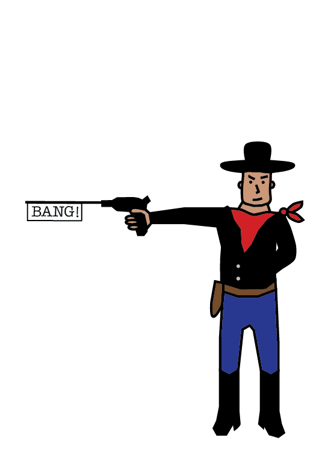
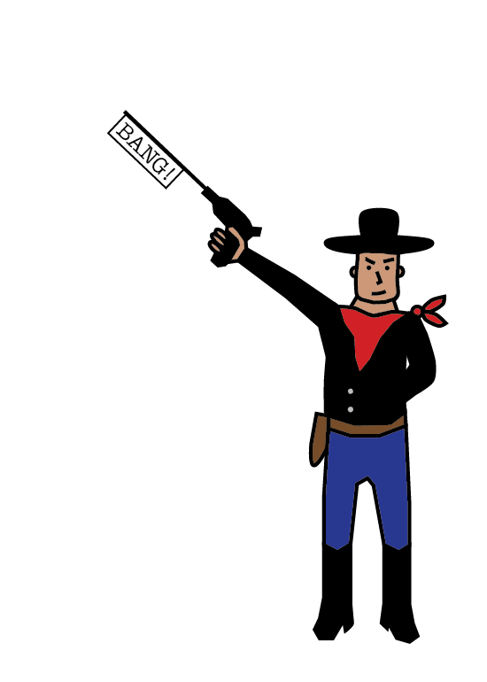
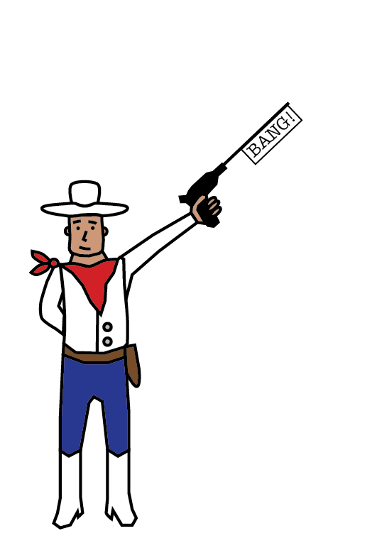
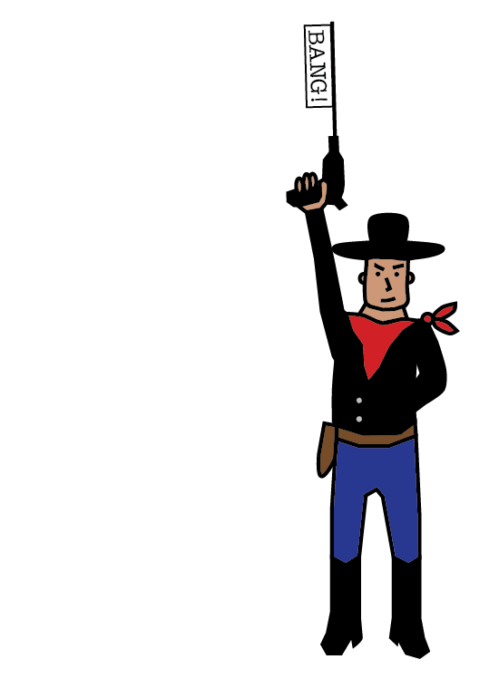

The puzzle contains quotes from fourteen pairs of actors. Although each quote's movie is immaterial to the puzzle, we include it here for, uh, fun, I guess:
| Quote | Actor | Movie | Quote | Actor | Movie |
|---|---|---|---|---|---|
| Nice set of hooters you got there.... the owls, they're beautiful | Jeff Daniels | Dumb and Dumber | Oh Mr. Sullivan, you're here. Good Morning... | Jeremy Irons | Margin Call |
| I've known you Mr. Rochester | Mia Wasikowska | Jane Eyre | Well, yes. I told Danceny you would act as his confidant and advisor… | Glenn Close | Dangerous Liaisons |
| Now I'm waylaid in this hee haw hell and you insist on clocking me in like some kind of factory worker | Michael J. Fox | Doc Hollywood | Did my wife confide in you about a third man? Sit down. Sit down! | Luke Evans | The Girl on the Train |
| This has been a very difficult time for myself and my family. Thank you for respecting my privacy. I look forward to my day in court. | Emma Watson | The Bling Ring | Made by the elves, you know, the blade glows blue when orcs are close | Ian Holm | The Lord of the Rings |
| Lies, distrust, mixed messages. This is turning into a real marriage. | John Travolta | Face/Off | Technically, I have more of a right to be there than you. You still have your balls. | Helena Bonham Carter | Fight Club |
| Richard Gere's a real hero of mine. Sting. Sting would be another person who's a hero... | Owen Wilson | Zoolander | Who's the guy. Svengali. Yeah. Svengali. From day one this airy fairy doctor had this svengali control over her | James Woods | The Boost |
| I'm positive. Nothing to worry about. It's a salt. A condensed liquid salt. | Tate Donovan | Love Potion No. 9 | I thought I saw Blair. Went out after him | Keith David | The Thing |
| But like any man who runs a growing business, he always had an eye out for qualified personnel | Roseanne Barr (as Roseanne Arnold) | She-devil | What are your prime directives? | Miguel Ferrer | Robocop |
| I'm not here to sign up Michaels or MacElroy, I'm here to sign up the pairs team of Michaels and MacElroy | Craig T. Nelson | Blades of Glory | Alright you alien assholes. In the words of my generation, up yours! | Randy Quaid | Independence Day |
| Tracy, you're a very intelligent woman. You have very admirable qualities... | Matthew Broderick | Election | I am no one special. Just a common man with common thoughts. | James Garner | The Notebook |
| Your first story was better. Where's that bellows clamp? He probably owes you money. We'll, I'll ask him. | Billy Crystal | The Princess Bride | You know there was a time when I wouldn't hurt a fly. Then the Borg came. And they showed me that if there is one constant in this universe, it's death. | Malcolm MacDowell | Star Trek: Generations |
| I studied the martial arts of three continents, so that one day I could meet you. Avenge my father | Ming-Na Wen | Street Fighter | You know what has to happen in a person's life for them to become a critic anyways? What are you writing? Another review? | Michael Keaton | The Birdman |
| I know what you're doing Curtis. You're breaking us up because you don't want me with Jimmy. None of you do because you're all jealous. Well, nothing's breaking me and Jimmy up. Nothing. | Anika Noni Rose | Dreamgirls | You are accused of treason and anti-Soviet behavior. The court finds you guilty. | Steve Buscemi | Death of Stalin |
| But I don't have a behavioral disorder. I mean, I worry for sure. It's a dangerous world. You'd be crazy not to worry. | Patton Oswalt | The Secret Life of Pets 2 | You know I'll bet dollars to donuts when you two aren't fighting about who shot first, Han or Greedo, you can still muster up enough energy to make fun of other people. | Jason Lee | Clerks II |
Each of the actors identified also starred as a hero (loosely) or a villain in a Disney movie. Ordered (by the left side, which is also alphabetical) and paired, those are:
| Movie | Actor | Role | Actor | Role |
|---|---|---|---|---|
| 101 Dalmatians | Jeff Daniels | Roger Dearly | Glenn Close | Cruella de Vil |
| Alice in Wonderland | Mia Wasikowska | Alice | Helena Bonham Carter | The Red Queen |
| Atlantis: the Lost Empire | Michael J. Fox | Milo James Thatch | James Garner | Commander Lyle Tiberius Rourke |
| Beauty and the Beast | Emma Watson | Belle | Luke Evans | Gaston |
| Bolt | John Travolta | Bolt | Malcolm McDowell | Dr. Calico |
| Cars | Owen Wilson | Lightning McQueen | Michael Keaton | Chick Hicks |
| Hercules | Tate Donovan | Hercules | James Woods | Hades |
| Home on the Range | Roseanne Barr | Maggie | Randy Quaid | Alameda Slim |
| The Incredibles | Craig T. Nelson | Mr. Incredible | Jason Lee | Syndrome |
| The Lion King | Matthew Broderick | Simba | Jeremy Irons | Scar |
| Mulan | Ming-Na Wen | Mulan | Miguel Ferrer | Shan Yu |
| The Princess and the Frog | Anika Noni Rose | Tiana | Keith David | Dr. Facilier |
| Ratatouille | Patton Oswalt | Remy | Ian Holm | Skinner |
Each actor's quote is paired with a small drawing of a cowboy firing a gun (a toy gun, of course, it's a theme park) in a certain direction—white-hatted cowboys for our heroes and black-hatted cowboys for the villains. Superimposing the two cowboys for each corresponding pair forms a set of semaphore letters:
| Jeff Daniels and Glenn Close |  | |
P |
| Mia Wasikowska and Helena Bonham Carter |  |  | U |
| Michael J. Fox and James Garner |  | |
D |
| Emma Watson and Luke Evans | |
D | |
| John Travolta and Malcolm McDowell | |
Y | |
| Owen Wilson and Michael Keaton | |
S | |
| Tate Donovan and James Woods | |
P | |
| Roseanne Barr and Randy Quaid | |
|
A |
| Craig T. Nelson and Jason Lee | |
R | |
| Matthew Broderick and Jeremy Irons | |
|
A |
| Billy Crystal and Steve Buscemi | |
L | |
| Ming-Na Wen and Miguel Ferrer | |
L | |
| Anika Noni Rose and Keith David | |
E | |
| Patton Oswalt and Ian Holm | |
L |
Which gives us our final message: PUDDY'S PARALLEL. Who plays Puddy, Elaine's boyfriend on Seinfeld? Patrick Warbuton, who is, in the Disney universe, KRONK from The Emperor's New Groove.